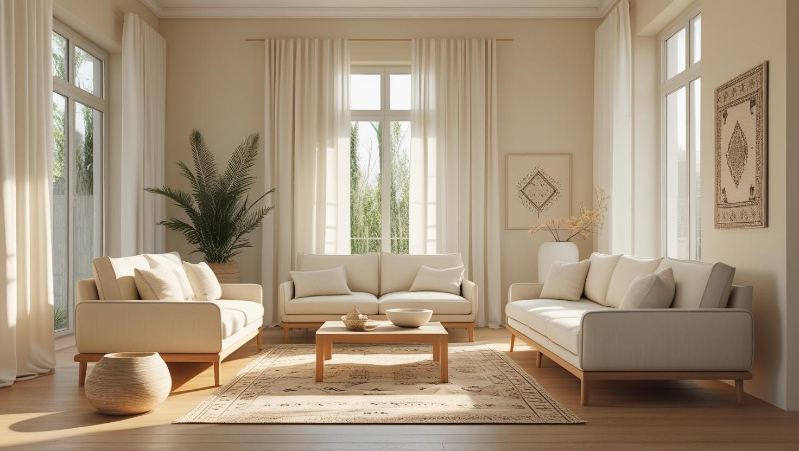
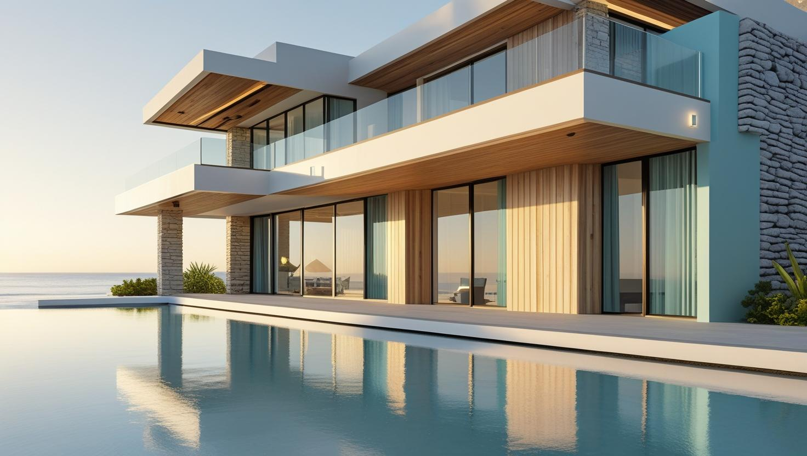
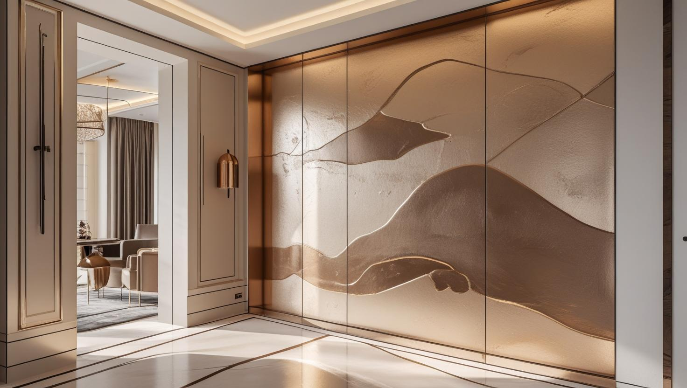

İstanbul Silivri Profesyonel Boya Ustası
20 yıllık tecrübemizle Silivri'de sahildeki yazlıklardan kırsal mahallelerdeki müstakil evlere ve merkezdeki apartmanlara kadar boya işini, keşifte netleşen kapsamla yazılı teklife bağlıyoruz.
Silivri'de Boya Badana: Müstakil Ev, Yazlık ve Site Karışımı
Silivri boyacı talebi ilçenin kendine özgü yapısını yansıtıyor: sahil şeridinde yazlık ve müstakil ev yoğunluğu, merkezde apartman ve site stoğu.
Yazlık ve mevsimlik kullanılan evlerde kapalı kalan dönem, iç mekânda yoğuşma ve küf riskini artırabiliyor. Sezon açılışı öncesi yapılan işlerde bu yüzden yüzey hazırlığı ve havalandırma planı, boya seçiminden daha belirleyici oluyor.
Silivri boya ustası talebinin ikinci ağırlığı dış cephe işleri. Denize yakın cephelerde tuzlu nem ve rüzgâr yükü, yüzey hazırlığını iç cepheye göre daha önemli hale getiriyor.
Hizmetlerimiz

İç Mekan Boyama
Silivri'de iç cephe boyama, merkezdeki apartman dairesinde başka, köy dokusundaki müstakil evde başka hazırlık ister. Eski evlerde duvardaki kireç badana ya da üst üste binmiş eski boya katmanları keşifte ayrıca kontrol edilir.
- Kireç badana üzerine astarlı uygulama
- Alçı ve sıva tamiri
- Mutfak ve banyoda silinebilir boya
- Kartonpiyer, kapı ve pencere kasası boyama

Dış Cephe Boyama
Silivri'nin kırsal mahallelerindeki evlerde dış cephe işinin planı, araç yanaşma durumu ve iskele malzemesinin bahçeye nasıl taşınacağıyla başlar. Sahil tarafındaki yazlıklarda ise işin sezon açılmadan bitirilmesi hedeflenir.
- Tuzlu havaya bakan cephede yüzey temizliği
- Bahçe duvarı ve giriş kapısı çevresi
- Rüzgâr alan köşelerde sıva onarımı
- Çok cepheli evde cephe cephe metraj

Dekoratif Boyama
Silivri'deki müstakil ev ve yazlıklarda yemek alanı ya da şömine duvarı gibi yüzeylerde taş ve tuğla efektli dekoratif boya uygulanabilir. Uygulamadan önce duvarın nemi kontrol edilir; nem gören bir yüzeye efekt boya yapılması önerilmez.
- Taş ve tuğla efektli duvar
- Yemek alanında vurgu rengi
- Mat, saten veya parlak son kat seçimi
- Nem kontrolü sonrası efekt uygulaması
Fiyat Tablosu
| Hizmet Türü | Metrekare Fiyatı | Ortalama Süre (100m²) | Garanti |
|---|---|---|---|
| İç Cephe Boyama | 100-200 TL | 2-3 Gün | Uygulama kapsamına göre |
| Dış Cephe Boyama | 150-280 TL | 3-5 Gün | Uygulama kapsamına göre |
| Dekoratif Boyama | 250-500 TL | 4-7 Gün | Uygulama kapsamına göre |
| Ofis Boyama | 120-220 TL | 2-4 Gün | Uygulama kapsamına göre |
Metrekare fiyatları yaklaşık ön değerlendirme aralığıdır. Uygulanacak ölçüm yöntemi, boyanacak alanın kapsamı, yüzey durumu, tamirat ihtiyacı, kat sayısı ve malzeme seçimi keşif sırasında netleştirilir.
Dış cephe boya fiyatları uygulama alanı için yaklaşık 150–280 TL/m² aralığındadır. Kesin hesaplama yöntemi ve teklif; yüzey durumu, bina yüksekliği, erişim veya iskele ihtiyacı, tamirat kapsamı, boya sistemi ve uygulanacak kat sayısına göre keşif sırasında netleştirilir.
Uygulama kapsamına göre işçilik garantisi sağlanır. Garanti kapsamı ve istisnaları teklif veya iş sözleşmesinde belirtilir.
Bu rakamlar İstanbul Boyacılık'ın 2026 gösterge fiyat aralığıdır. Bir piyasa ortalaması değildir. Kesin fiyat; yüzey durumu, hazırlık ve tamirat miktarı, uygulanacak kat sayısı, seçilen malzeme sınıfı, ulaşım ve kat koşulları ile evin eşyalı mı boş mu olduğu keşifte görüldükten sonra belirlenir.
Silivri'de mesafe ve işin bir günden uzun sürmesi, ekip planlamasında hesaba katılan kalemler. Aralığı ayrıca dış cephe işlerinde yükseklik ve erişim ihtiyacı ile kapalı kalmış evlerde çıkan yoğuşma onarımı yukarı taşıyabiliyor.
Silivri'nin Kırsal Mahallelerindeki Eski Evlerde Kireç Badana Üzerine Boya
Köy dokusunun sürdüğü mahallelerdeki eski müstakil evlerde duvarlarda kireç badana ile karşılaşılabilir. Kireç tabakası temizlenmeden ve uygun astar sürülmeden yapılan plastik boya zamanla tabaka hâlinde dökülebilir.
Bir duvarın kireç badanalı olup olmadığını keşifte küçük bir alanı kazıyarak kontrol ediyoruz. Kireçli yüzeyde gevşek katman fırçayla alınır, toz temizlenir ve bağlayıcı bir astar uygulanır; kalın ve kabarmış katmanlarda kazıma işi uzayabildiği için bu kalem teklifte ayrı gösterilir.
Aynı evde sonradan eklenmiş bir odada ya da yenilenmiş bir duvarda kireç bulunmayabilir; bu yüzden hazırlık oda oda belirlenir. Dökülme ve soyulmanın diğer nedenlerini boya neden dökülür ve soyulur rehberimizde anlattık.
Silivri'de Keşiften Önce Paylaşmanız Gereken Bilgiler
Keşiften önce birkaç bilgiyi paylaşmanız, ustanın doğru ekipmanla gelmesini ve eksik kalan bir ölçü yüzünden ikinci bir ziyaret gerekmemesini sağlar. Özellikle müstakil evlerde erişim bilgisi, iskele ve malzeme planını doğrudan etkiler.
- Konum: WhatsApp'tan paylaşılan konum ve site ya da köy içinde evin tarifi.
- Fotoğraflar: Boyanacak odaların, cephelerin ve varsa nem lekelerinin fotoğrafları.
- Erişim: Evin önüne araç yanaşıp yanaşamadığı ve bahçe kapısından malzemenin geçip geçemeyeceği.
- Su ve elektrik: Dış cephe temizliği ve ekipman için bağlantının hazır olup olmadığı.
- Takvim: Sezon açılışı ya da taşınma gibi işin bitmesi gereken zaman.
Yazlığı Yıl Boyu Oturulan Eve Çevirirken Boya Planı
Yaz için kullanılan bir evde yıl boyu oturmaya başlamak, duvarların kış koşullarında da sınanması demektir. Boya planı bu yüzden yalnız renk seçimiyle değil, ısınan ve soğuk kalan yüzeylerin durumuyla birlikte yapılmalıdır.
Isıtılan odalarda dış duvara bakan köşeler ve pencere çevreleri soğuk kaldığında yoğuşma görülebilir; bu noktalar boyadan önce kontrol edilir. Yalıtım eksikse boya bu sorunu tek başına çözmez, ancak doğru hazırlık ve uygun iç cephe sistemi lekenin tekrar etmesini geciktirebilir.
- Mutfak ve banyo: Günlük kullanımda buhar artar; silinebilir ve neme dayanıklı boya tercih edilir.
- Çocuk ve çalışma odası: Sık temizlenen duvarlar için lekeye dayanıklı seriler düşünülebilir.
- Dış cephe: Kış yağışlarına açık cephelerdeki kılcal çatlakların soğuklar başlamadan kapatılması gerekir.
Silivri Boya Badana Teklifinde Müstakil Eve Özgü Kalemler
Silivri boya badana tekliflerinde müstakil evler, aynı metrekaredeki bir apartman dairesine göre daha fazla kalem içerir. Metrekare aralıklarını Fiyat Tablosu'nda bulabilirsiniz; aşağıdaki kalemler ise tutarın bu aralıkta nereye düşeceğini belirler.
- Kireç ya da çok katmanlı eski boya: Kazıma ve bağlayıcı astar gerektiren duvarlar.
- Dubleks yapı ve çatı arası: Merdiven boşluğu ile eğimli tavanlı odalar ek ekipman ve işçilik ister.
- Bahçe ve avlu duvarları: Toprakla temas eden alt kısımlarda nem ve yosun temizliği ek iş çıkarır.
- Ahşap yüzeyler: Saçak tahtaları ve ahşap pencere kanatları iç duvar boyasından ayrı hesaplanır.
Bu kalemlerin her biri teklifte ayrı satırda yer aldığında, hangi işin bütçeyi ne kadar etkilediğini kendiniz görebilirsiniz.
Silivri’de Hizmet Verdiğimiz Mahalleler
Selimpaşa ve Gümüşyaka'daki yazlıklardan Seymen, Çayırdere ve Danamandıra gibi köy kökenli mahallelere kadar aşağıdaki mahallelerin hepsinde keşif planlıyoruz:
Silivri Mahalleleri
- Silivri Akören Mahallesi
- Silivri Alibey Mahallesi
- Silivri Alipaşa Mahallesi
- Silivri Bekirli Mahallesi
- Silivri Beyciler Mahallesi
- Silivri Büyük Çavuşlu Mahallesi
- Silivri Büyük Kılıçlı Mahallesi
- Silivri Büyük Sinekli Mahallesi
- Silivri Cumhuriyet Mahallesi
- Silivri Çanta Balaban Mahallesi
- Silivri Çanta Sancaktepe Mahallesi
- Silivri Çayırdere Mahallesi
- Silivri Çeltik Mahallesi
- Silivri Danamandıra Mahallesi
- Silivri Değirmenköy Fevzipaşa Mahallesi
- Silivri Değirmenköy İsmetpaşa Mahallesi
- Silivri Fatih Mahallesi
- Silivri Fener Mahallesi
- Silivri Gazitepe Mahallesi
- Silivri Gümüşyaka Mahallesi
- Silivri Kadıköy Mahallesi
- Silivri Kavaklı Hürriyet Mahallesi
- Silivri Kavaklı İstiklal Mahallesi
- Silivri Kurfallı Mahallesi
- Silivri Küçük Kılıçlı Mahallesi
- Silivri Küçük Sinekli Mahallesi
- Silivri Mimar Sinan Mahallesi
- Silivri Ortaköy Mahallesi
- Silivri Piri Mehmet Paşa Mahallesi
- Silivri Sayalar Mahallesi
- Silivri Selimpaşa Mahallesi
- Silivri Semizkumlar Mahallesi
- Silivri Seymen Mahallesi
- Silivri Yeni Mahallesi
- Silivri Yolçatı Mahallesi
Silivri Boyacılık Müşteri Yorumları
"Silivri’de ev boyama yaptırdım. İstanbul Boyacılık zamanında geldi ve çok temiz iş çıkardı. Boyadan sonra temizlik bile gerektirmedi."
Ayşegül Demir
Silivri / İstanbul
"Silivri ofis boyama hizmetinden memnun kaldık. Kaliteli malzeme ve uygun fiyat için tekrar tercih ederim."
Erkan Şahin
Silivri / İstanbul
"Dış cephe boyası yaptırdık. İşçilikleri özenliydi, randevuya sadık kaldılar ve zamanında teslim ettiler."
Yasemin Karaca
Silivri / İstanbul
Faydalı Bağlantılar
Silivri boya badana planında fiyat hesabı, boya markası ve yakın ilçe seçeneklerini birlikte değerlendirmek için aşağıdaki rehberler kullanılabilir.
Silivri Boyacı Ustası — Yazlık, Müstakil Ev ve Keşif Soruları
Silivri'deki yazlığın boyasını sezon açılmadan nasıl yetiştirebilirim?
İşi sezon başına sıkıştırmamak için keşfi ve teklif onayını önceden tamamlamak gerekir. Kapalı kalmış bir evde boyadan sonra bir süre havalandırma gerektiği için işin bitişini taşınma ya da sezon açılış gününe dayamamak iyi olur.
Yazlık evim kışın kapalı kalıyor, duvarlarda küf oluyor. Ne yapılmalı?
Kapalı ve havalandırılmayan mekânda yoğuşma kaçınılmaz hale gelebiliyor. Boyadan önce küflü yüzeyin temizlenmesi ve uygun astar uygulanması gerekiyor; ayrıca kullanım dışı dönemde düzenli havalandırma sorunun tekrarını azaltıyor. Keşifte durumu görüp öneriyoruz.
Eski evde yağlı boyalı kapıların üzerine su bazlı boya yapılabilir mi?
Yapılabilir, ancak doğrudan sürülürse yeni boya yağlı yüzeye tutunmaz ve kısa sürede kalkar. Yüzey önce temizlenip zımparalanır, ardından yağlı boya üzerine uygun bir astar uygulanır ve su bazlı son kat bundan sonra sürülür.
Silivri'ye keşif için geliyor musunuz?
Geliyoruz. Mesafe nedeniyle keşif randevusunu diğer ilçelere göre biraz daha önceden planlıyoruz. Telefonda adresi ve işin büyüklüğünü aldıktan sonra size gerçekçi bir gün söylüyoruz.
Silivri boyacı ustası duvardaki çatlağın yapısal olup olmadığını nasıl ayırt ediyor?
Sıvadaki ince kılcal çatlaklar dolgu ve astarla kapatılabilir. Kolon, kiriş ya da duvar birleşimlerinde görülen çapraz ve genişleyen çatlaklar ise boya konusu değildir; önce bir inşaat mühendisine incelettirilmesi gerekir. Keşifte böyle bir iz görürsek boyaya geçmeden bunu size söylüyoruz.
Dış cephe için hangi mevsim uygun?
Dış cephe uygulamasında sıcaklık ve nem koşulları önemli; çok soğuk, çok sıcak ve yağışlı havalarda uygulama önerilmiyor. Denize yakın cephelerde rüzgârlı günler de uygulamayı zorlaştırıyor. Planı hava koşullarına göre birlikte kuruyoruz.
İletişim
İletişim Bilgileri
Telefon: 0507 832 29 12
E-posta: boyaustamistanbul@gmail.com
10+ Uzman Ustamızla Silivri ve çevresine hizmet veriyoruz.
Çalışma Saatleri: Pzt-Cmt 00:00-23:59